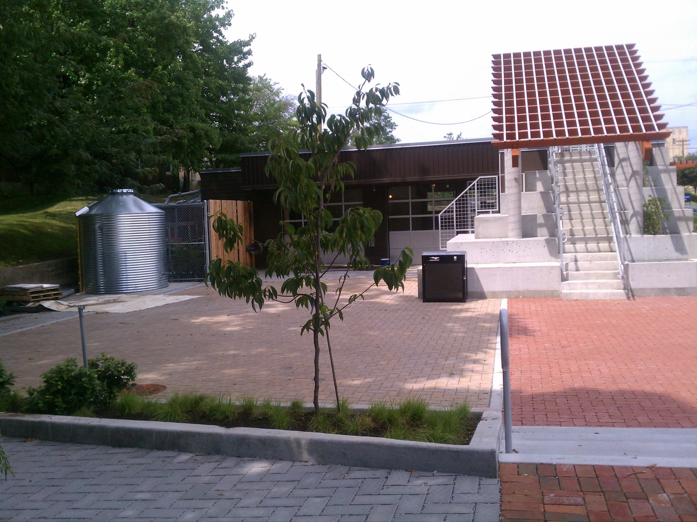
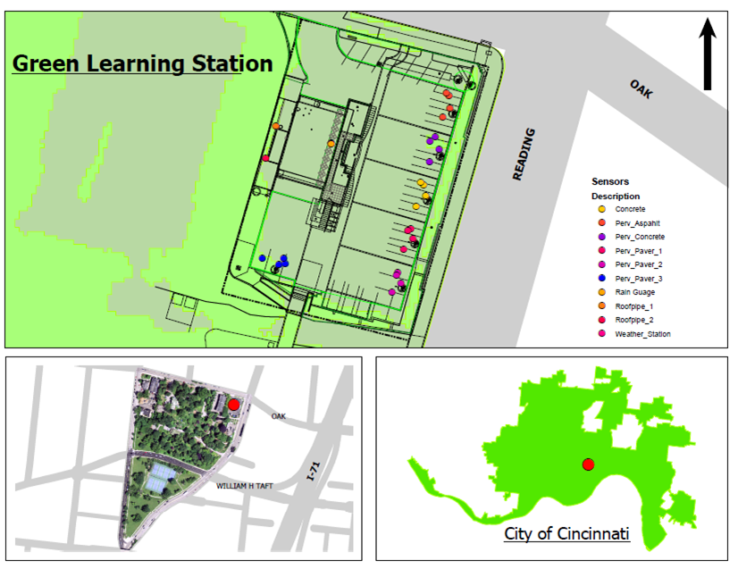
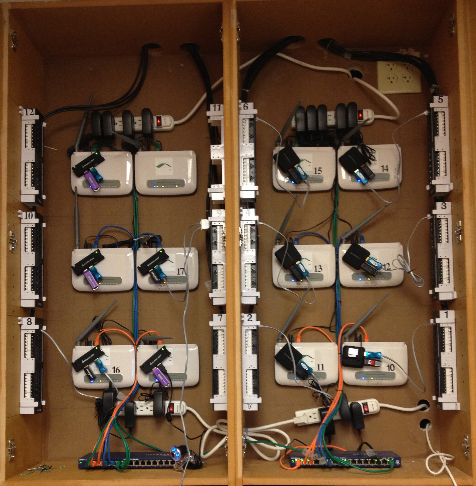
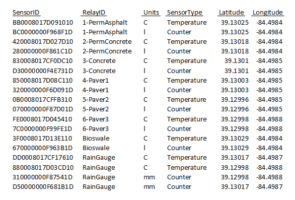
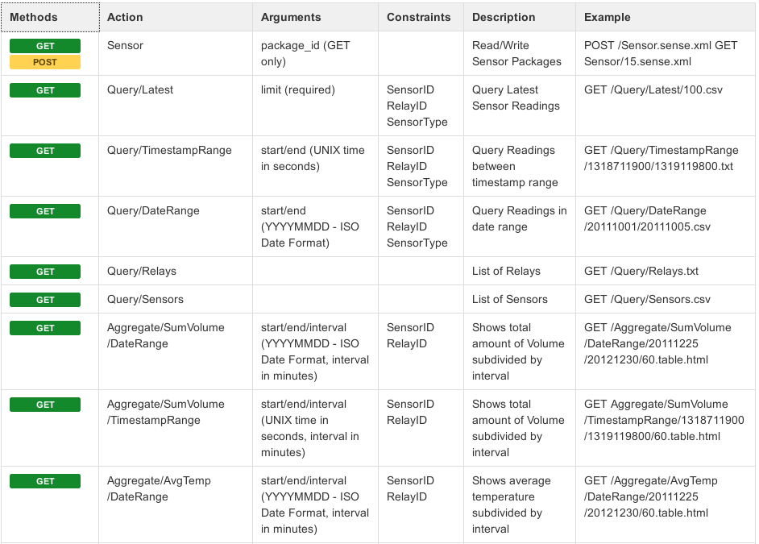
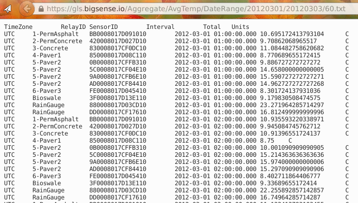

Sensor Networks on Linux
An introduction to BigSense/LtSense
Sumit Khanna
/
@djsumdog
Original Purpose
Combined Sewer Systems
Original Purpose
Combined Sewer Systems
Green Learning Station
Green Learning Station
Green Learning Station

Green Learning Station

Methodology
Linksys Running OpenWRT
Sensor Relays

GPS

BigSense Web Service API

Example Query
